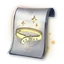
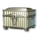
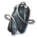

After level 45
The order to gear up in, from level 45 to the 10-player dragon raid. Numbers are item level.
Found a mistake or have something to add to this page?
Based on Aragon's global route to 2,500 item level (October 10) and SywoGG's progression guide; the upgrade mechanics come from TitanTheF's progression sheet. Blocks from a video link to their moment. AragonSanya JacuzziSywoGGTitanTheFAragon
- The item level milestones
- 45Story, regional quests and your map
- 1400To 1,400: Shugo, Nightmare, Draupnir
- 1900To 1,900: Vakron and Urugugu
- 2100To 2,100: ★2 Transcendence and a crafted card
- 2500To 2,500: Ferocious Horn Den
- 2800To 2,800: gold arcana and the raid
- Hardcore route: enhance a cheap blank, then transfer
- How gear upgrades work
- Soulbind: stats for each slot
- Pets and Genus Insight
- Titles: what to equip
- Tips for everyone
The item level milestones
Aragon's route on global: 2,500 item level in two weekly resets with the membership and zero P2W — free to play, expect four to five resets.
| Item level | What it opens | How you get there |
|---|---|---|
| 1,000 | the last main story step in the Abyss — a legendary guard | regional quests and sealed dungeons after 45 |
| 1,400 | Vakron Sky Island, Urugugu Canyon | Abyss feathers, every regional quest and sealed dungeon, Nightmare, Shugo Festival |
| 1,900 | ★2 Transcendence | the Vakron set, Urugugu accessories, enhancement |
| 2,100 | Ferocious Horn Den, Fire Temple | green arcana from ★2 Transcendence, a crafted legendary card |
| 2,500 | ★4 Transcendence | Horn Den armor, Fire Temple weapon and accessories, one ★3 run |
| 2,800 | the Ludra raid | gold arcana, enhancement past +15 |
- Skip the tier 1 dungeons. The map and the side content take you past them, so your energy goes to Vakron and the dungeons after it. ▶ 7:31
- Never dissolve legendary gear. Extract everything else for enhancement stones, but keep each legendary piece for soul bind rerolls and Transfer.
Story, regional quests and your map
Milestones. You reach 45 at about 700 item level. The last step of the main story (in the Abyss) asks for about 1,000 — if it doesn't let you in, do the steps below first and come back: Daevanion crystals, clash runes, belt and amulet, Exploration: Draupnir. ▶ SywoGG 0:46
- Finish the main story first. It gives a gold weapon for your class,
 Ascension Bracelet and
Ascension Bracelet and  Ultimate Daeva Wings (equipped: HP 500, MP 250, Penetration 500, Critical Hit 35; owned: Penetration 100, Accuracy +20, Attack +10). ▶ Sanya Jacuzzi 1:27
Ultimate Daeva Wings (equipped: HP 500, MP 250, Penetration 500, Critical Hit 35; owned: Penetration 100, Accuracy +20, Attack +10). ▶ Sanya Jacuzzi 1:27 - Regional quests (Journal → Regional): two rings, two earrings and a necklace (blue), plus two PvE runes. They also give titles and Theostone chests.
- Enhance a little, set up your PvE macro and clear every ? on your own map: each sealed dungeon gives
 Daevanion Crystal ×2 and 2 skill points, each stronghold
Daevanion Crystal ×2 and 2 skill points, each stronghold 
Noble Belt Enhance Scroll ×2. - Then the remaining regional quests and the feathers: at least 95 Empyrean Trace: Altgard take the Monolith to level 11, which upgrades the amulet from green to blue.
- Abyss feathers: collect all 200 Empyrean Trace: Altgard in the Abyss (about an hour and a half) and hand them in at the Monolith — level 16 brings Daevanion points, 36 of them for the PvP board. ▶ 2:24
- The end of the story opens new regional quests: go back for the better armor and accessories, and finish every sealed dungeon — each gives Daevanion crystals and skill points.
- Not sure where the Daevanion points go? The corners first, then the blue skill nodes.
- Clash runes (

Clash Rune Chest): 60 item level each, so the pair is +120. They come from green quests around the map, or buy them in the Nightmare shop (Growth tab) with the currency from first clears. Don't enhance them past +1 unless you have a spare. ▶ SywoGG 2:32 - The story bracelet (Ascension Bracelet) stays with you for months: take it to +10–11 — it adds attack and defense too — and put your one
 Superior Manastone in it: two gold rolls give the most item level. The second bracelet comes from a quest of your own faction (item level 43).
Superior Manastone in it: two gold rolls give the most item level. The second bracelet comes from a quest of your own faction (item level 43).
To 1,400: Shugo, Nightmare, Draupnir
1,400 opens the tier 2 dungeons. Aragon gets there with the Abyss feathers, every regional quest and sealed dungeon, Nightmare and the Shugo Festival — the steps below.
Shugo Festival and boss rifts
Mini-games with a reward card at the end. Your place decides how many cards you open. If you placed badly you can skip the reward — the  Shugo Festival Reward Key is only spent when you take it. Keys: 7 by default, +1 a day, up to 30 more stored — don't let them cap. ▶ Sanya Jacuzzi 5:06
Shugo Festival Reward Key is only spent when you take it. Keys: 7 by default, +1 a day, up to 30 more stored — don't let them cap. ▶ Sanya Jacuzzi 5:06
The festival runs every hour. Any mini-game counts — pick the one you are best at and always play that one, aiming for 1st or 2nd place. Every half hour an incursion boss appears: deal damage for contribution and open every card when you claim — they can hold more Shugo currency. ▶ 3:50
| Place | Cards |
|---|---|
| 1st | 4 |
| 2nd, 3rd | 3 |
| 4th and lower | 2 |
Boss rifts (e.g. Beritra Air Raid): hold off the waves, then kill the mini-boss. 100 contribution points = 3 cards, the same rewards as Shugo. Invite Chanters, Clerics and Templars right at the portal — their party buffs make 100 points easy. ▶ Sanya Jacuzzi 5:54
The main prize is Shugo currency: spend all of it on  Daevanion Crystal in the Festival Shop — per character, price goes up in steps: 50 (×10), 100 (×10), 200 (×15), 400 (×15) —
Daevanion Crystal in the Festival Shop — per character, price goes up in steps: 50 (×10), 100 (×10), 200 (×15), 400 (×15) —  Centuryroot Token ×10,500 in total. ▶ Sanya Jacuzzi 6:36
Centuryroot Token ×10,500 in total. ▶ Sanya Jacuzzi 6:36
Nightmare
- Solo boss dungeon. 14 base attempts that refill on their own (+2 a day), plus a second pool of up to 30 that you fill with tickets; charges start piling up at level 45 — reach it before the first reset. ▶ Sanya Jacuzzi 7:06
- Every boss has 10 challenge levels; kill each on all of them. An attempt is spent only on a kill, so leave and come back stronger. Greys first, then greens, then the Last Boss.
- First clear gives
 Phantasmal Fragment ×500, repeats 100. Shop, Growth tab: Daevanion Crystal for 300 (×50 per character),
Phantasmal Fragment ×500, repeats 100. Shop, Growth tab: Daevanion Crystal for 300 (×50 per character),  Stigma Shard for 1,500 (×35), Clash Rune Chest for 500. Keep 14,000 for the statue.
Stigma Shard for 1,500 (×35), Clash Rune Chest for 500. Keep 14,000 for the statue.
Expedition: Conquest — Draupnir
- Run it up to the guarantee: 14 chest openings (7 with premium), 40 Odyle energy each. The goal is two gold pieces from drops and a third from the guarantee — you pick which Bakarma piece (Bakarma Breastplate, helm, pauldrons, gloves, greaves, boots). ▶ Sanya Jacuzzi 7:45
- Collect every Empyrean Trace: Altgard in Chaotic Lower Reshanta: the Monolith resonance levels give Daevanion crystals such as
 Daevanion Crystal: Azphel.
Daevanion Crystal: Azphel. - Still short? Three runs of Exploration: Draupnir guarantee another gold piece — take any you don't have and put an

Intermediate Manastone in it.
Enhancement at 1,400
| Slot | Level | Manastone |
|---|---|---|
| Gold weapon and bracelets | +10 | |
| Gold armor from Draupnir | +10 | Intermediate Manastone ×1 |
| Blue armor, earrings, necklace, rings | +5 | |
| Belt, amulet | +3 | — |
Plus a green Theostone in the weapon (for example  Theostone: Jumentis's Dexterity) — the regional quests hand one out. Done right, that is exactly 1,400. ▶ Sanya Jacuzzi 8:27
Theostone: Jumentis's Dexterity) — the regional quests hand one out. Done right, that is exactly 1,400. ▶ Sanya Jacuzzi 8:27
- Short of 1,400? Enhance: blue gear to +10 is cheap, to +5 far cheaper still, and most of the stones come back when you dissolve the piece later. ▶ 4:46
- The story bracelets (Ascension Bracelet) can go to the maximum — it is not wasted.
 Lesser Manastone in every piece: two green rolls give the most item level. Superior Manastone from achievements can roll gold lines.
Lesser Manastone in every piece: two green rolls give the most item level. Superior Manastone from achievements can roll gold lines.
Belt, amulet and Odyle energy
- Belt and amulet: green → blue in Substance Morph, then up to gold (unequip them first) — a big jump in item level; don't go past gold, it gets expensive. Strongholds and the Monolith give the upgrade material. ▶ SywoGG 6:24
- Spend Odyle energy with care: after each new piece enhance it, add manastones, check your item level, and only then decide where to go next — another run of the same dungeon or something you haven't done yet.
To 1,900: Vakron and Urugugu
- Vakron Sky Island (tier 2, Conquest) until you have most of the armor set — the best chance of gear you will use. The pity reward comes after 21 chest openings: 11 runs with the membership, which opens the end chest twice. ▶ 7:31
- Pity tickets go to Substance Morph: a choice chest for the armor piece you still miss, or two tickets for
 Vakron Guard. Run Exploration once first — opening its end chest three times gives a one-time pity reward; claim it only after Conquest, when you know which piece is missing.
Vakron Guard. Run Exploration once first — opening its end chest three times gives a one-time pity reward; claim it only after Conquest, when you know which piece is missing. - Urugugu Canyon for the accessories — Aragon needed 13 runs. Don't farm it for the weapon: the chance is low and most weapons there belong to other classes. A dropped weapon plus two tickets later crafts a choice chest.
- Still short? Take legendary gear to +11 (just under 1 million kina a piece; +5 is about 130,000) and add manastones rather than burning energy on more runs.
- No luck with drops? A few runs of ★1 Transcendence (from 1,600) for grey arcana: 20 item level per card, up to +100 for the five slots — often faster than farming the last gold pieces.
To 2,100: ★2 Transcendence and a crafted card
At 1,900 go straight to ★2 Transcendence — Shattered Arkanis and Deus Research Base. It is a difficulty spike: tight rage timers and half an hour per run. The goal is a full green set, 5 × 40 = +200 item level, from 1,900 to 2,100. ▶ 11:31
- Transcendence opens at 1,600. Five arcana slots: a grey card gives 20 item level, green 40, blue 60. A full green set is +200 (1,600 → 1,800), swapping it for blue is another +100. ▶ SywoGG 8:46
| Dungeon | Arcana it drops |
|---|---|
| Deus Research Base | Chalice, Compass, Bell |
| Shattered Arkanis | Chalice, Parchment, Mirror |
A crafted legendary card
- Arcana → Transmute crafts a legendary card from five
 Mysterious Crystal, with the skill you choose on it. ▶ 20:20
Mysterious Crystal, with the skill you choose on it. ▶ 20:20 - One crystal: extract the spare cards you collected on the way (Arcana → Extract) until the bar is full.
- One: the season shop, for 25,000 season coins from the season missions.
- Three: the Ascension Trial score rewards at 1,000, 3,000 and 4,000 — 4,000 needs Hard mode at about 2,000 item level.
To 2,500: Ferocious Horn Den
Go straight to Ferocious Horn Den (the RU community calls it “the Dog”) and stay until you have most of its armor set. Move your Vakron enhancement into the new pieces with Gear Transfer. ▶ Sanya Jacuzzi 10:18
Fire Temple, the other dungeon of this tier, drops the weapon and accessories. ▶ SywoGG 11:16
- In Ferocious Horn Den open the Exploration end chest three times for the pity tickets, but don't pick the armor yet — wait until only one piece is missing, then use the tickets (or trade them for the guard). ▶ 16:43
- Then Fire Temple for the weapon and the accessories; the same tickets fill what doesn't drop.
- One run of ★3 Shattered Arkanis for blue cards is what pushed Aragon over 2,500.
- For the weapon and the guard, the Black Cloud merchant regularly sells Theostones — a green one is about +3 item level.
- Transfer (keeps enhancement and soul binds) only when the soul binds are good: Combat Speed on the gloves and the necklace, Move Speed on the earrings, Damage Boost on the chest, Critical Damage Boost on the shoulders.
To 2,800: gold arcana and the raid
Farm gold arcana in ★4 Transcendence and roll the skills you need for your PvE and PvP setups (for example  Mirror of Vigor +5 with the Primal Vigor set). At 2,800 the 10-player dragon raid opens — the hardest PvE of Season 1 and a source of resources for the next update. ▶ Sanya Jacuzzi 10:30
Mirror of Vigor +5 with the Primal Vigor set). At 2,800 the 10-player dragon raid opens — the hardest PvE of Season 1 and a source of resources for the next update. ▶ Sanya Jacuzzi 10:30
From here +10–11 is not enough: gear goes past +15 towards +20, and above +15 that needs Amplify Stone (Unique). Don't take all dungeon gear to +20 — crafted gear (item level 94 and 102 against 86 from drops) is what is worth +20 and fine-tuned manastones. ▶ SywoGG 11:32
Aim for 2,800 by the end of the first month — that opens the Ludra raid with new accessories. Energy decides how fast you get there: craft Odyle Energy in Substance Morph, and with the membership buy energy from the Wind Breeze merchant every week. ▶ 22:40
Hardcore route: enhance a cheap blank, then transfer
Same steps as above, but saving every enhancement stone and kina: enhance a cheap blank and move the result to the gear you keep.
- Enhancement cost grows with item level (Vakron Cloak, 76: 380 stones and 9,500 kina a try; Abyssal Bracelet, 84: 420 and 10,500). After +10 the chance drops (+13 → +14: 25%, +5% after each fail) and a try at the top costs about 2 million kina. ▶ Sanya Jacuzzi 11:48
- A transfer stone (
 Transfer Stone: Weapon (Unique),
Transfer Stone: Weapon (Unique),  Transfer Stone: Armor (Unique)) moves the enhancement level and rolled stats to any item — even from the cheapest gold piece to the best one. Made in Substance Morph from gold gear.
Transfer Stone: Armor (Unique)) moves the enhancement level and rolled stats to any item — even from the cheapest gold piece to the best one. Made in Substance Morph from gold gear. - Plan: wear the lowest item level gold gear, don't enhance new drops. When a long-term upgrade drops, take a cheap blank for that slot to +15 and transfer it. Works for weapon, armor and guard, not accessories (no cheap sources).
- It is slow without alts: 3–4 extra characters bring the additional enhancement stones.
How gear upgrades work
Source: TitanTheF
The five Enhancement tabs in short: Enhance, Manastone, Theostone, Soul Binding and Transfer.
| Gear grade | Max enhancement |
|---|---|
| Blue | +15 |
| Gold | +20 |
| Orange | +25 |
- Enhance. Gold gear has a 100% chance up to +10, after that it drops. A fail never breaks the item — only the materials and kina are spent. Above +15 you also need Amplify Stone (Unique), made in Substance Morph from
 Amplify Stone Fragment (Unique) and
Amplify Stone Fragment (Unique) and  Enhance Stone.
Enhance Stone. - Manastones. The number of slots depends on the rarity: white 1, green 2 and so on. There are two kinds — for weapons and armor, and for accessories — each in a normal and a PvP version (Superior Manastone).
- Theostones go into the weapon and the guard: damage, damage over time or control. They trigger with a chance on attack — the higher your combat speed, the more often (
 Theostone: Jumentis's Dexterity).
Theostone: Jumentis's Dexterity). - Soul Binding. Tab 1 raises the quality of the stats, tab 2 rerolls them — with any unneeded gold gear or reroll items — tab 3 uses books. Sync Stone (Unique) comes from the battle pass, hard dungeons and dungeons from 2,800.
- Transfer moves enhancement and stats to another item — see the hardcore route above.
- Titles each give passive stats; the title info shows how to get one.
- The season lasts 2–3 months. Season points buy crafting materials in the season shop.
Soulbind: stats for each slot
Source: Aragon
Rerolling the soulbind stats on your gear burns other legendary pieces — the drops you get farming mobs and pets.
- In the soulbind window pick Sync, a legendary piece to burn and the stat line you want. The window shows the chance for that stat; Sync consumes the piece. ▶ Aragon 3:19
- Attack, Might and Precision go on every piece anyway — the table lists the other lines with the most impact.
| Slot | Stats |
|---|---|
| Weapon and guard | Combat Speed, Weapon Damage Boost, Damage Boost |
| Head | Double Chance, Attack Increase |
| Shoulders | Critical Damage Boost, Double Chance |
| Chest | Damage Boost, Perfect Chance |
| Legs | Attack Increase, Perfect Chance, Damage Tolerance |
| Arms | Combat Speed, Perfect Chance |
| Feet | Move Speed, Perfect Chance |
| Cloak | Double Chance, Attack Increase |
| Earrings | Move Speed |
| Necklace | Combat Speed |
| Rings | Skills |
Pets and Genus Insight
Pets, Genus Insight and the lines to roll now have their own page: Pets and Genus Insight.
Titles: what to equip
Three slots — attack, defense and other — and only the equipped title gives the stats below. Every title you own also adds a small permanent bonus, so the rest are worth collecting too. Names as in the game; Elyos / Asmodian where they differ.
Attack
Unbound by Genus
Critical Hit +68Attack +34PvE Damage Boost +4.5%
Mastered Genus Insight.
The best PvE attack title, but a long goal.
Guardian of Verteron / Guardian of Altgard
Defense Penetration +210PvE Damage Boost +3%
Reached Level 20 of the [Verteron Monolith] / Reached Level 20 of the [Altgard Monolith]
The one to wear first: raise your home region's Monolith by finding Empyrean Traces.
Treading on Black Wings / Treading on White Wings
PvP Accuracy +80PvP Attack +40PvP Damage Boost +4%
Gathered those with the red mark.
For PvP.
Defense
Saint of Verteron / Saint of Altgard
Block +100Defense +300Damage Tolerance +3%
Reached Level 30 of the [Verteron Monolith] / Reached Level 30 of the [Altgard Monolith]
The usual pick — the same Monolith, all traces found.
Dominator of Dimensions
Max HP +1,000Defense +340PvE Damage Tolerance +4.5%
Obtained 25 Wings.
PvE: tanks and anyone who dies on bosses.
Rule All Creation
Defense +320Back Attack Damage Tolerance +3%Boss Damage Tolerance +4%
Collected 200 types of Pets.
A long-term option with boss damage tolerance.
Other
Through Hell and Back
Max HP +900Stamina +225Cooldown Reduction +3%
Cleared Sealed Dungeon: [Ruins of the Ancient City of Ru]
Easy and good: one sealed dungeon in your home region.
Empty Closet
HP Regen +42Combat Speed +3.5%Cooldown Reduction +3.5%
Obtained over 700 Skins but it's still not enough.
The best one, but 700 skins take months.
Tips for everyone
Daily contracts (Journal → Duty → Mission) reset every day. Only the first random reward is guaranteed; the others are a chance that drops along the list — 100%, 50%, 33%, 25%, 10%. ▶ Sanya Jacuzzi 14:18
- Take every contract with the golden key in slots 1–4.
- No key: short on enhancement stones — the one with the most stones; otherwise the one with the most rainbow and other pet stones.
- A gold item or resource at the end of the list is almost always a trap — skip those.
Hidden cubes give 1,000 crystals each — pick up every one you pass. Unbound kina is for buying materials, not for enhancement. TitanTheF
Daily Dungeon and the trials: don't touch them and don't open their pass boxes if they are handed out at launch. They are being reworked, rewards depend on your score (kill speed), and they refresh only at the end of the week — go then, at your strongest. Weekly world and Abyss rewards are being reworked too; wait for the live numbers. ▶ Sanya Jacuzzi 15:21
Where else combat power comes from
- Stigmas and their levels — the biggest single jump. ▶ SywoGG 13:20
- Soul Binding: reroll the stats on your weapon, guard and accessories towards better ones (for example Critical Hit → Attack Speed).
- Offensive items past +15 — each step adds Attack %.
- Titles, Pantheon decorations (Illusion and Wisdom have the best stats) and wings — Vakron or Nightmare wings are great.
- Rerolling the stats on the Pet / Genus Insight branch, and fine-tuning manastones and soulstones towards offensive stats.
- Weapon skins: dismantle them on alts and use Combine on your main — every weapon you unlock adds damage with that weapon type.
Back to the first week checklist →